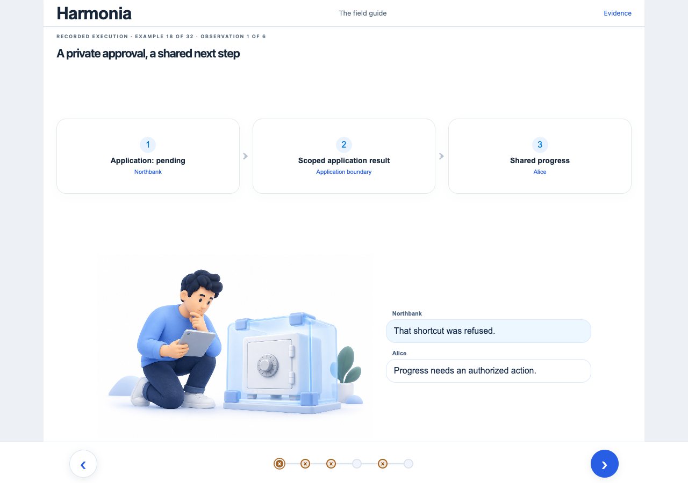

Four readers. Four independent paths.
Keep the approved UI. Organize the content around the question each reader brings.
Read each column downward. Three proposed pages, then an end. No automatic jump between paths.
User
What does this let me do?
Alice wants to make a property proposal with her bank's approval.

-
Start with Alice's goal
The existing bank-to-property infographic: Alice, Northbank, Ben and Sofia, each with a clear role.
-
Follow the proposal
Northbank approves → Alice proposes → Ben relays → Sofia receives. Each stop shows its consequence below the stable infographic.
-
Understand the ending
The same purchase has two explicit endings in its carousel: proposal received, or financing declined and the proposal blocked.
End of this pathI understand the journey and can recognize its outcome.
Investor
Why does this work, and what is proven?
A technical evaluator wants the mechanism behind the product promise.

-
Understand Daml and Canton
Northbank's authorized Daml choice, separate participant views, and the scoped result that permits Alice to continue.
-
Connect independent applications
Two supported paths into the same workflow core: implement its interface, or compile an adapter for an eligible existing DAR.
-
Separate proof from ambition
Local workflow evidence beside the remaining product questions: broader integration, independent adoption and release readiness.
End of this pathI can explain the mechanism, the demonstrated scope and the remaining risks.
Architecture
How is the system designed?
A reviewer wants to test whether the design satisfies the original intent.

-
Locate each responsibility
A diagram of browser, off-ledger Scala service, bindings, on-ledger Daml core and application contracts; show ownership and participant boundaries.
-
Trace one command
Request → typed service → ledger choice → observed state. A refused action stays visibly refused along that same route.
-
Challenge the guarantees
Three focused diagram stops: a refused authority bypass, an eligible atomic settlement, and progress recovered after reconnection. Pair each with its original claim and evidence.
End of this pathI can identify boundaries, trace execution and challenge a claim with evidence.
Implementation
Where do I read and verify the code?
A senior developer wants one understandable route through a real feature.

-
Find the feature
The existing file tree and colored source view, with a concise explanation of the financing slice and its place in the repository.
-
Read the typed path
The financing screen, shared API, Scala service, Daml choice and observation code, with purpose annotations beside the real source.
-
Verify the golden story
Input → execution → actual result beside the committed expectation; connect the result to the same recorded infographic.
End of this pathI know where to read, what owns each behavior and how it is verified.